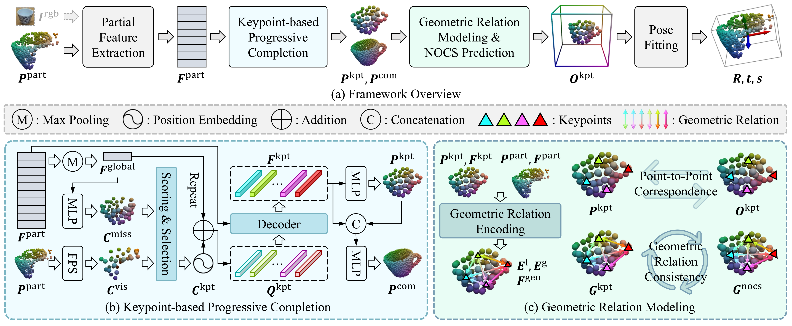
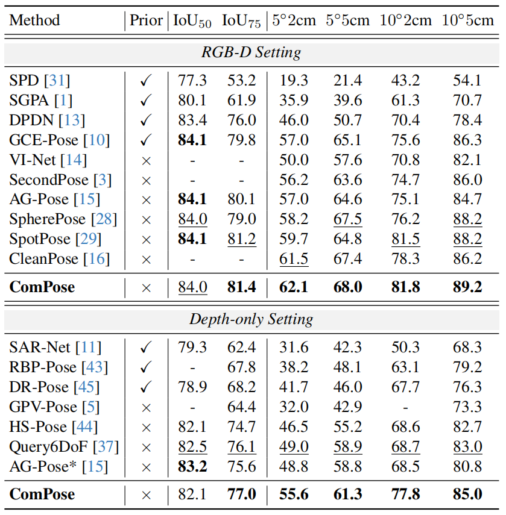
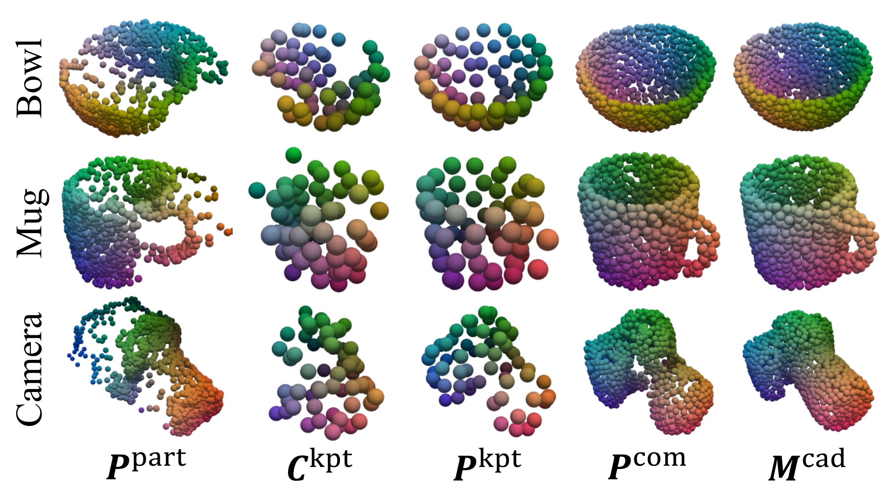

Category-level object pose estimation aims to predict the pose and size of arbitrary objects in specific categories. Existing methods struggle with the inherent incompleteness of observed point clouds, which limits their ability to capture complete object shapes for robust pose reasoning. While point cloud completion offers a promising solution, naively treating it as a separate preprocessing step for partial observations introduces compounding errors and additional computational overhead, ultimately hindering both accuracy and efficiency. To address these challenges, we propose ComPose, a novel unified framework that tightly integrates shape completion to provide complete geometric cues for enhanced pose estimation. At the core of ComPose is a keypoint-based progressive completion module, which recovers full shape representations by progressively predicting a sparse set of keypoints and their surrounding dense point sets, empowering the keypoints to capture holistic object geometries. A geometric relation encoding module further enriches keypoint features with both local and global geometric context. In addition, we introduce a novel geometric relation consistency loss to enforce structural alignment between observed keypoints and their predicted NOCS coordinates, ensuring globally coherent coordinate transformations. Extensive experiments on standard benchmarks demonstrate that our method outperforms state-of-the-art approaches without relying on category-level shape priors.

(a) Overview of the proposed ComPose framework, which supports both RGB-D and depth-only settings, where the latter omits the RGB images $I^{\mathrm{rgb}}$.
(b) The initial coarse keypoints $C^{\mathrm{kpt}}$ are adaptively selected from missing and visible candidates $\{ C^{\mathrm{miss}}, C^{\mathrm{vis}} \}$. These coarse keypoints are then progressively refined through feature interactions with the partial features $F^{\mathrm{part}}$ to recover complete object geometries, including refined keypoints $P^{\mathrm{kpt}}$ and dense shapes $P^{\mathrm{com}}$.
(c) The keypoint features $F^{\mathrm{kpt}}$ are enhanced into $F^{\mathrm{geo}}$ via geometric relation encoding, incorporating both local and global geometric context $\{ E^{\mathrm{l}}, E^{\mathrm{g}} \}$. To ensure robust coordinate transformations, the pairwise geometric relations $G$ among keypoints are constrained to maintain alignment between the observation and canonical spaces.

Comparison with state-of-the-art methods on the REAL275 dataset.
Under the depth-only setting, ComPose outperforms previous methods by a large margin across all 6D pose metrics, achieving improvements of 6.8% on $5^{\circ}\text{2cm}$ and 9.3% on $10^{\circ}\text{2cm}$ over the keypoint-based AG-Pose.
Under the RGB-D setting, ComPose further achieves the best results across all 6D pose metrics without relying on shape priors.

Qualitative visualization of the keypoint-based progressive completion. ComPose recovers complete and accurate object geometries from partial observations across diverse categories.
@inproceedings{cvpr2026compose,
title={ComPose: A Unified Completion-Pose Framework for Robust Category-Level Object Pose Estimation},
author={Ren, Huan and Chen, Yihan and Wang, Chuxin and Liu, Nailong and Yang, Wenfei and Zhang, Tianzhu},
booktitle={Proceedings of the IEEE/CVF Conference on Computer Vision and Pattern Recognition (CVPR)},
year={2026}
}